Issuing
To issue items to borrowers, you must log in with either:
-
an "issue" account or
-
a "library" admin account.
These can be the standard "library" and "issue" accounts or they can be custom accounts the administrator has created.
Issue Process
The standard issue process is a nested loop.
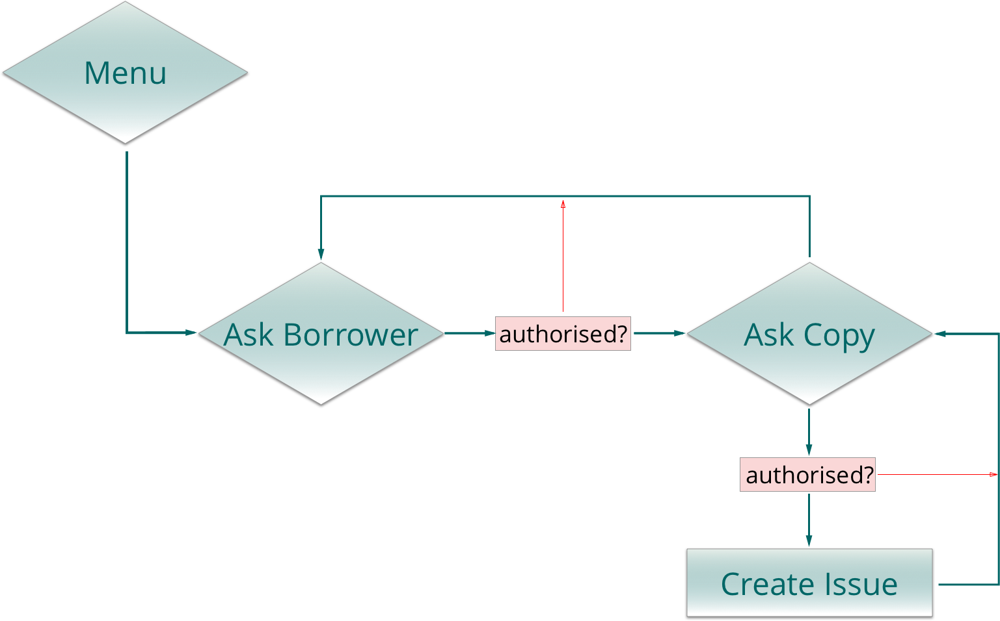
note: issuing can be triggered by a number of actions which which can bypass various steps in the process
Standard Issue
You are first prompted for the borrower.
If the borrower is authorised, you are prompted for the item to issue.
If the item is authorised for issue, the issue record is created and you are then prompted for the next item. Rinse and repeat.
If there are no more items, simply press the enter key without entering an item bar code and you are prompted for the next borrower. And so it goes.
Specifying the borrower
There are a few ways to specify the borrower in the issue process:
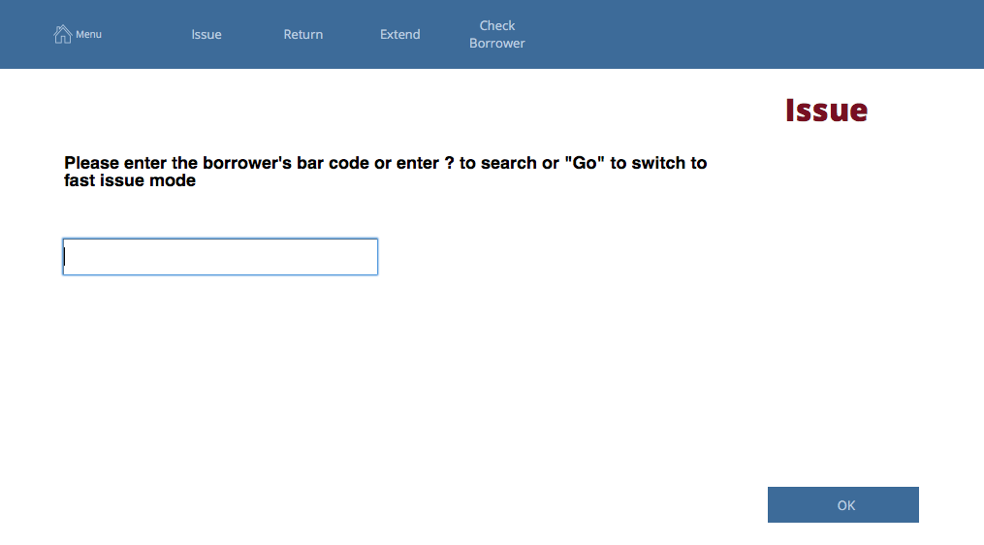
At this screen, you may:
- type or scan the bar code for the borrower if you know it
- type the first few letters of the borrower's family or given names - if the letters only match on one borrower, Athenaeum assumes that borrower and will start the issue to that borrower, otherwise it brings up the search screen.
- type a question mark to search for a borrower
- enter "Go" (without the quotation marks) to switch to "Go Mode" (you will need your "options" password)
- enter # to then specify a fixed number of days that you may issue (you will need your "options" password)
Searching on the fly
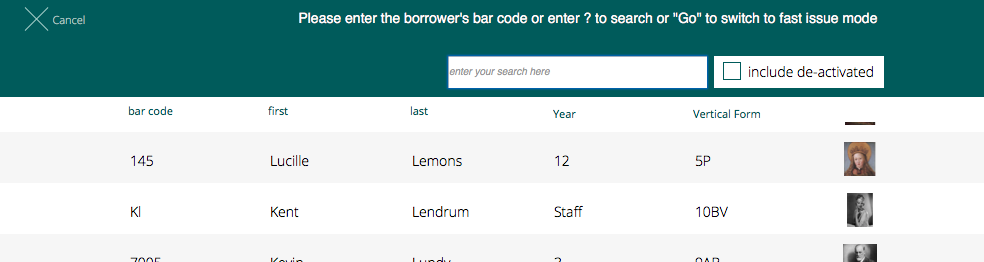
Entering the first few letters of a borrower's name will show matching borrowers, both by family name (left) and first name (right).
Note that the column headings will sort the found borrowers by the column heading you click.
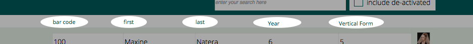
Click on the borrower to whom you wish to issue to continue the process.
By default, inactive borrowers are excluded from the search.
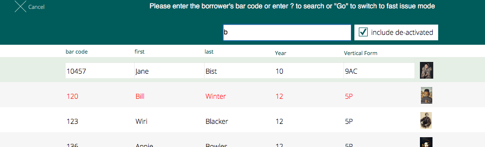
Clicking the "show inactive" button will include inactive borrowers with their names shown in red.
Specifying the item
If the borrower is authorised, their details are shown, along with their photo, if stored and you are prompted for the bar code of the item.
At this screen, you may:
- scan the bar code of the item
- type a question mark and search for the item
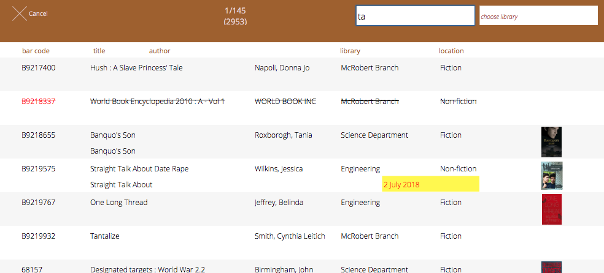
When searching for an item during the issue process, you can sort the found results by title or author. Items that are marked "not for issue" have a strike through their details (you can still attempt to issue these by overriding). Items that are currently issued will show with the due date in red text on a yellow background.
If the item is authorised for issue to this borrower1, then it is processed and you are prompted for the next item.
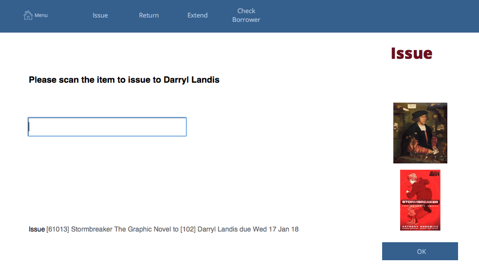
The issue screen shows the borrower's issues, any reserves that borrower may have; the book cover of the last item - if there is one stored; and the list of previous transactions at the bottom.
Issuing from borrower screen
At the borrower list and borrower detail screen, if a borrower is authorised, you can commence the issue process directly for the selected borrower by clicking the issue button on the right side:
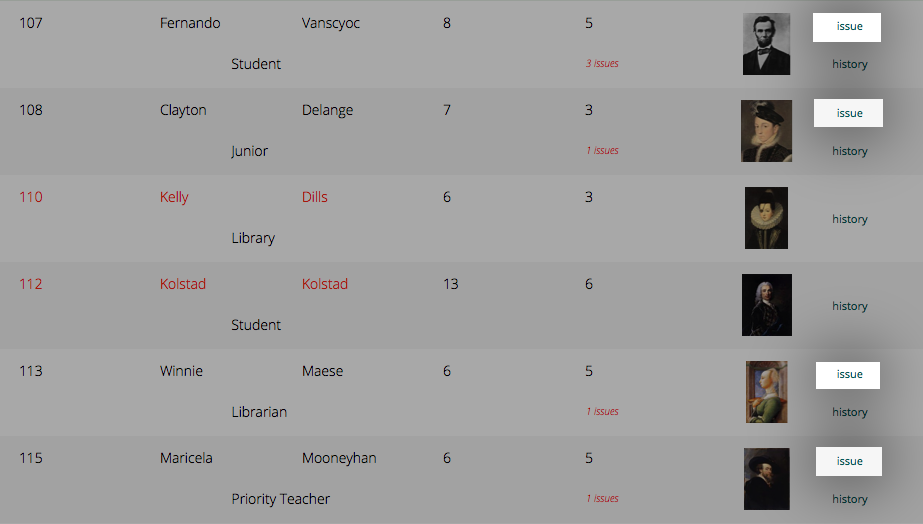
You will next be prompted for the items to issue to the borrower.
note: that deactivated borrowers (bar codes 110 and 112 in red pictured above) do not have an issue button next to their entry
Issuing from Catalogue
Click the gear widget to the right of the copy detail on the Title detail screen and click the Issue button.
Athenaeum will prompt you for the borrower and then process the issue.
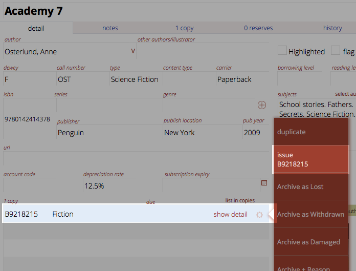
Issuing from the Copies list
If viewing the list of copies, click the process menu to the right of the copy and then choose issue.
Athenaeum will prompt you for the borrower and then process the issue.
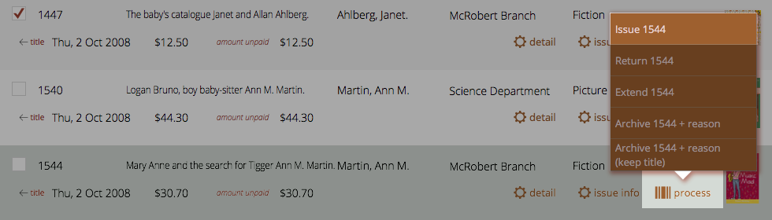
Extending Issues
To extend an issue, either
- start the Extend process and scan the item or
- find the item in circulation and click the Extend this Item button
The new due date is the current date plus the calculated issue duration while considering the system "latest date", the borrower privilege "latest date" or the borrower "latest date".
If the title is reserved and there are insufficient copies available to cover the reserves, then the extension will not be allowed.
If there is a limit on the number of extensions for the borrower type, then that is checked before allowing the extension.
Overriding
When issues are declined, a dialog pops up showing the reasons and prompts you to enter an override password:
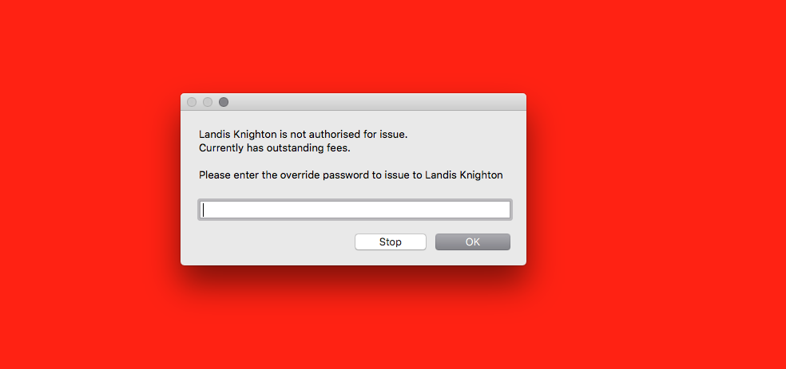
The background goes red to assist attracting your attention.
If you enter your "options password" and click Override, then Athenaeum will check the password and then allow or deny the issue.
You can click the override button, enter the options password and then re-issue.
Overriding while logged in as "Issue"
Note that by default, the issue account may not have the ability to override, which gives the library administrator some measure of control for following the rules.
To enable to the issue account to override, go to Admin->Issues and check the "issue account can override with options password".
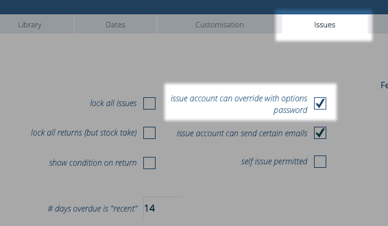
Go mode
Go mode is a mode of issue where Athenaeum ignores privileges and will simply issue as instructed.
Invoke it by entering Go when prompted for the borrower bar code, entering the options password and then Athenaeum will simply issue unconditionally.
You know you are in "Go" mode when you see "fast issue mode" at the top of the issue screen.
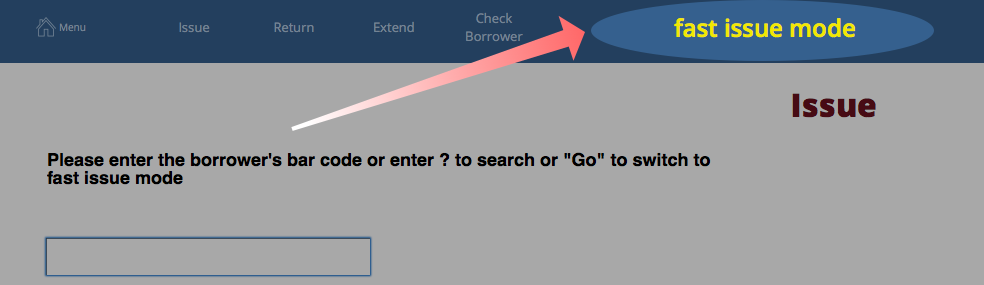
Returning Items
To return, simply start the return process and scan the items. The transaction history is updated, book covers displayed, if available and other actions such as Overdue Fees, reserve notifications processed.
Returning is covered in detail in the returning chapter.
Athenaeum will also return an item if it is re-issued to another borrower without first being returned properly.
Reading List issues
Some libraries like to record the fact that items in the library are "read", but not necessarily issued. This is achieved by having library patrons return items they have casually read in the library to a "finished reading box" (or some other suitable receptical) rather than putting the items back on the shelf. Then, when convenient, the items are scanned and "marked as read".
You can do this in Athenaeum in the following suggested way:
- from the catalogue listing, choose Find->Find Bar Codes
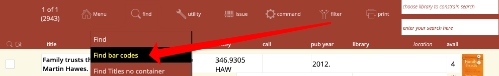
- scan the bar codes from your "reading box" and then click "count"
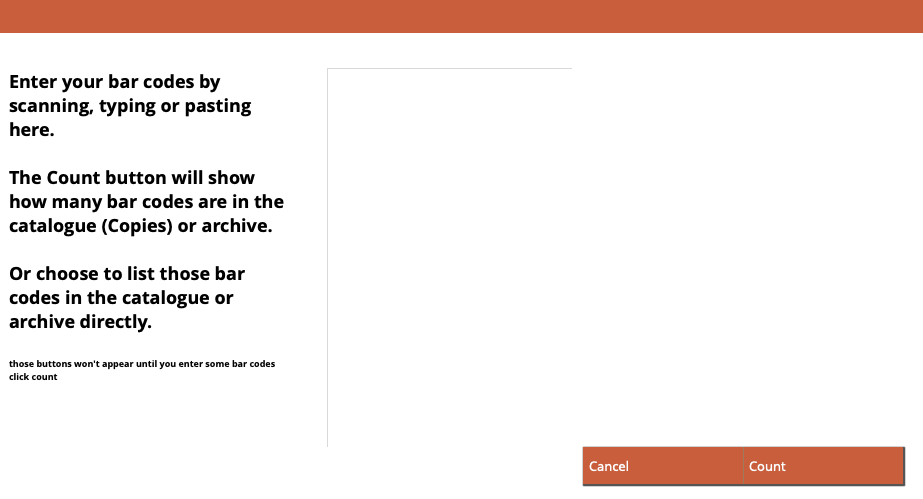
- "count" will check the bar codes and show a quick summary of how many were found in the copies list or in the archive
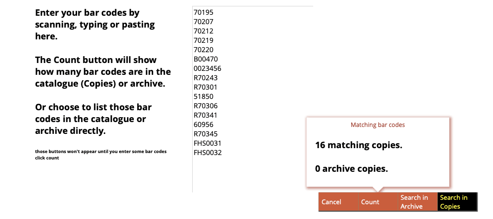
-
click "Search in Copies" to list the items and make them the "found set"
-
now choose "command->Add nn copies to reading history" (where nn is the number of copies in the found set)
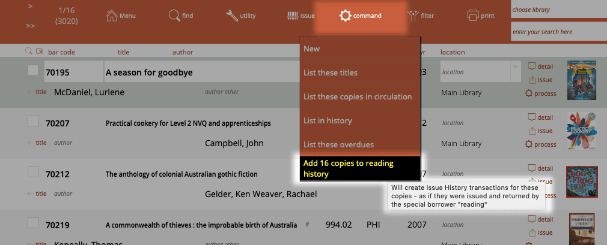
The copies are added to the issue history assigned to the borrower "reading".
Note
Reading entries in the history are included in reports and statistics. You may find reading entries by searching for "reading" in the history list. Exclude "reading" entries by choosing Filter->omit "reading" records from found set.
Issuing using your web browser
The Athenaeum web templates can be configured to allow issuing using your web browser with a little bit of set up and careful thought for some security issues.
You will need to:
- ensure your blog and web templates on your web server are up to date
- set up custom accounts
- configure whether issues from a web browser can override or not
- configure the web templates to allow issue
- start Issuing
Set up
Version
The version is displayed in the footer of each page:
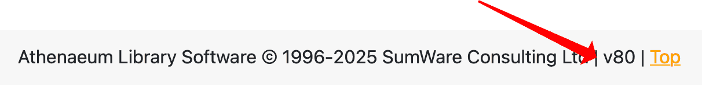
The current version is available to all current support agreement holders. Hosted Athenaeum sites automatically receive updates.
Custom accounts
For security reasons, the standard "Issue" account is not permitted to issue via a web browser (amongst other things, too many people have very low security on this account). You must either create named internal accounts for borrowers permitted to issue, or if you are using active directory, assign those borrowers to the "lib_issue" group and add a corresponding log on name to the borrower's record.
Following the instructions at:
create an account of type "issue" with a secure password (this is very important). It is probably a good idea to not make the account name easily guessable.
You can also create an account of type "Library" (which is higher than issue), however, this can not be named "library".
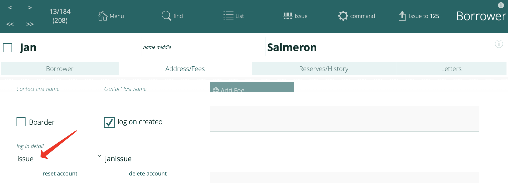
Override
When issuing from the web, overriding works differently. The issuer can either override, or they can't. If an issuer is allowed to override, they will not be asked for an override password.
This is controlled with the "issue account can override" setting in Admin.
The difference is that the options password is not presented to a web issuer if an override situation arises, compared to an issuer using a conventional issue station.
If you turn this setting on, an issue will allowed automatically. However, a message is displayed to the user stating what was overridden.
For this reason, you should allocate issue accounts wisely.
Configuration.php
On your web server, edit the configuration.php file and set the "allow_login" and "allow_issue" lines to true.
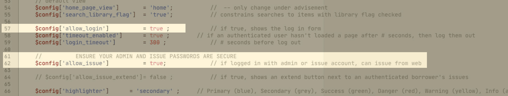
If you are Athenaeum hosted, this is done for you.
Log in and start Issuing
Connect to your web site, click the log in button in the navbar and enter your issue credentials:
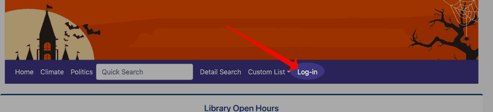
When you have successfully logged in, you will have an issue option in your navbar:
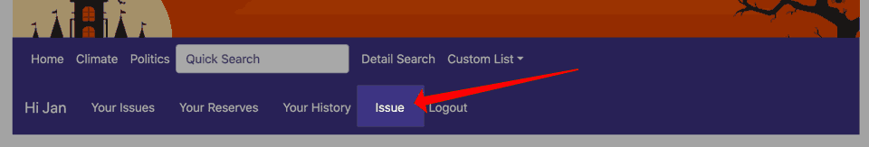
Click that button to start the issue process.
You are required to scan (or type) the bar code for the borrower and then item issued in turn:
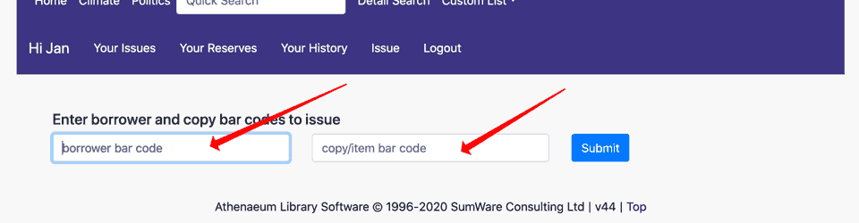
Note that you can type the bar code for the borrower and press enter and then scan each item for that borrower simply pressing enter in between. If you are using a scanner, the normal configuration is for the scanner to send an "enter" after each bar code.
After each issue, the due date and thumbnail images for the borrower and item (if available) are displayed in a green background notification:
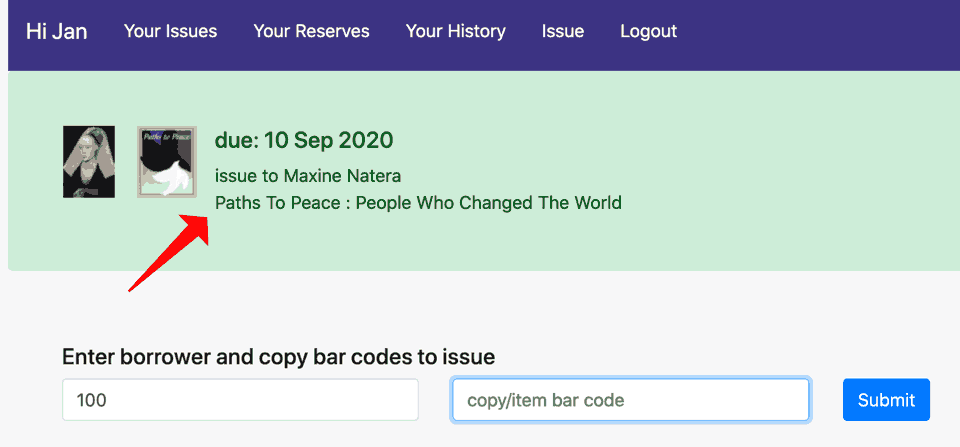
If there are issue notes for the borrower or the item, these are displayed:
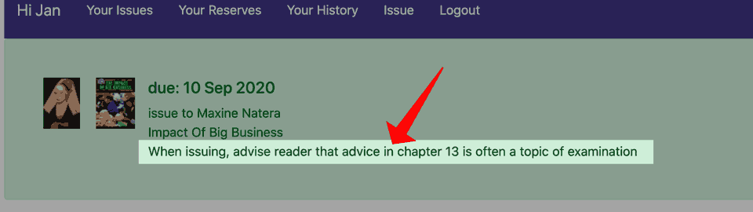
If the issue is declined, the reason is shown on a red "danger" background:
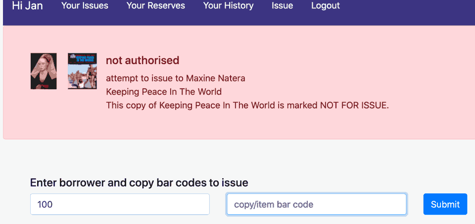
If there was an override required by the issue process and the issuer can override, then the results are displayed, but with a warning (yellow) background:
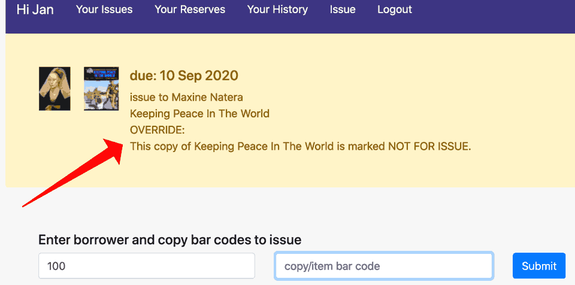
-
Authorisation can change at any stage during the issue process and is constantly recalculated. ↩